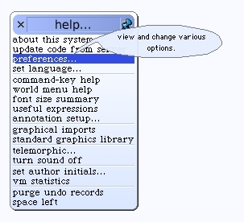
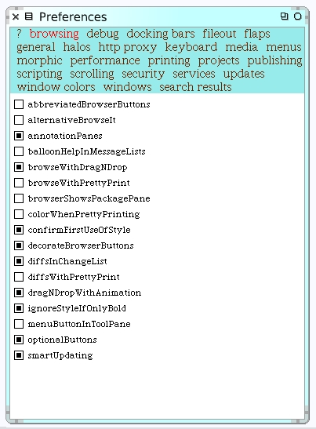

Setup
Before we save our image I'd like to set some preferences. Open up Preferences from the "help" menu.
The Preferences window shows a list of categories on a light-blue background. Each category behaves like a Tab control in other control panes you may have experienced in other applications. Select the "browsing" preference category.
I like to activate the "annotationPanes" and "dragNDropWithAnimation" preferences here.